8 小時客戶工作坊
GitHub Copilot Token 最佳化
花費更少 Token。保持品質。建立企業防護欄。
從儲存庫說明文件內容產生的 Reveal.js 簡報。
工作坊成果
解釋成本
輸入、輸出、快取 Token、代理程式 (Agent) 迴圈、MCP 結構描述 (schemas)、模型路由。
改變行為
提示詞壓縮、輸出控制、上下文衛生、Ask/Edit/Agent 路由。
交付導入計劃
企業預算、模型原則、指示範圍、每月審查迴圈。
重要框架
請使用 docs.github.com/copilot 以了解支援的功能行為、計費控制項與管理員原則。
8 小時議程
| 時間 | 單元 | 產出 |
|---|---|---|
| 00:00-00:30 | 為何 Token 至關重要 + 快速制勝法 | 共享成本模型 |
| 00:30-02:00 | 提示詞、語言、輸出實作 | 精簡提示詞範本 |
| 02:00-03:15 | 上下文 + 常駐檔案 | 指示剪裁差異 (diff) |
| 03:15-04:15 | 工作流程 + 模式 | 模式路由速查表 |
| 04:15-05:15 | MCP/工具成本 + 資料 | MCP 稽核清單 |
| 05:15-06:15 | 實用設定 | 儲存庫設定檢查清單 |
| 06:15-07:10 | 模型/定價 + 治理 | 客戶管理員導入 |
| 07:10-07:40 | 每個 Token 成果 | 計劃/執行/驗證迴圈 |
| 07:40-08:00 | 專題實作 | 30 天 Token 計劃 |
導覽
水平方向 = 章節。垂直方向 = 章節投影片 + 實作。
按下 Esc 鍵顯示概觀。按下 S 鍵顯示講者備忘錄。
快速入門
現在可以做的 14 件事
從輸出開始，然後縮減結構性輸入，最後路由模型與工具。
最速制勝法
- 僅程式碼回應：最高的每 Token 投資報酬率。
- 限制格式：項目符號、單一句子、JSON、表格。
- 縮減常駐上下文：指示與代理程式 (Agent) 檔案。
- 預設使用 Auto：僅在有合理解釋時釘選進階模型。
- 使用 Ask 模式處理簡單問題。
更多快速制勝法
- 使用
applyTo限制上下文範圍。 - 撰寫精確提示詞：目標檔案、函式、完成條件。
- 針對目標模型重新調整提示詞。
- 稽核 MCP 伺服器。
- 先將富文字檔案轉換為 Markdown。
更多快速制勝法，續
- 在 Copilot CLI 中執行
/chronicle cost tips與/chronicle improve。 - 使用 AI Engineering Coach進行 VS Code 習慣審查。
- 對於長 CLI 工具鏈，嘗試 CodeAct。
- 為重複的程式碼庫導覽建構 Graphify 地圖。
優先順序堆疊
輸出優先
一個預設設定即可改變每個回應。
常駐次之
微小的基準會產生加成效果。
模式第三
依工作形狀選擇 Ask、Edit、Agent。
治理第四
預算與模型原則限制花費。
成果第五
計劃、路由、驗證、關閉。
實作 0：評估您的習慣基準
目標
在學習技巧前，找出您前三大 Token 洩漏點。
步驟：將以下各項標記為綠/黃/紅：輸出詳細度、指示大小、開啟的標籤頁、Agent 使用、MCP 數量、模型釘選、長交談歷史紀錄。
交付物：個人基準 + 一項「今日修正」行動。
時間：10 分鐘。
第一部分
為何 Token 至關重要
Token 驅動成本、速度、限制與上下文容量。
Token 是次字詞 (Subwords)
BPE 行為
- 常用字詞可以是一個 Token。
- 罕見字詞會拆分成碎片。
- 標點符號與填充字詞仍然計算在內。
核心洞察
Sure, I'd be happy to help! 可能會燒掉約 10 個完全沒有技術價值的 Token。
成本模型
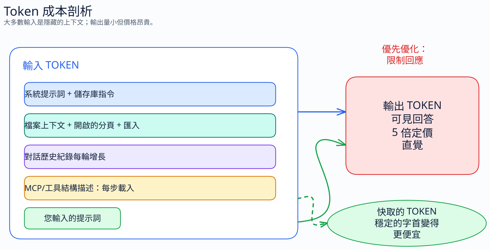
在供應商定價範例中，輸出 Token 的成本通常比輸入 Token 高得多。
輸入大於您的提示詞
上下文視窗
├─ 系統提示詞
├─ copilot-instructions.md / AGENTS.md
├─ 檔案上下文與開啟的標籤頁
├─ 交談歷史紀錄
├─ MCP 工具結構描述
└─ 您輸入的提示詞您輸入的 20 字提示詞可能隱藏在數千個隱藏 Token 中。
編碼代理程式 (Coding Agent) 倍增效應
一次從 Issue 到 PR 的執行不只是一個請求。
代理程式 (Agent) 步驟
計劃、搜尋、讀取檔案、編輯、執行測試、檢查失敗、重試。
加成效應
每個步驟都會重新載入基準上下文，並加上之前的工具結果。
實作 1：Token 剖析
目標
區分可見提示詞與隱藏上下文。
步驟：選擇一個最近的 Copilot 工作。列出可能的上下文來源：開啟的檔案、參照的檔案、指示、歷史紀錄、工具、輸出。
討論：哪個來源最容易控制？
時間：15 分鐘。
第 2.1 部分
提示詞壓縮
用更少的 Token 表達相同的意思。保留技術精確度。
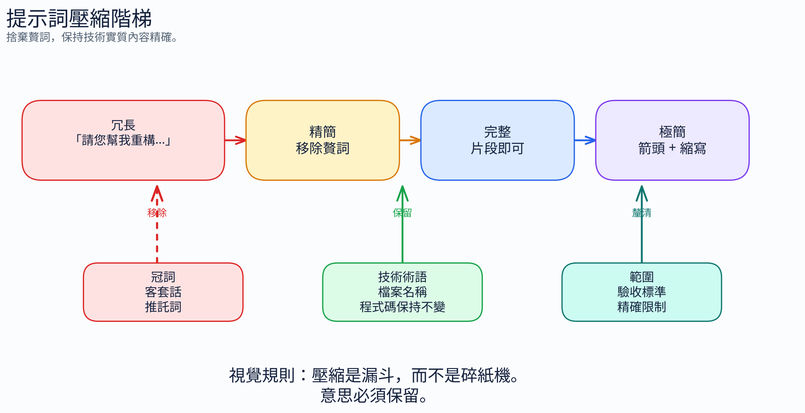
原始人模式
丟棄
冠詞、填充字、客套話、迴避字句、軟化詞。
保留
技術術語、程式碼、檔案名稱、限制條件、確切的完成條件。
[物件] [動作] [原因]。[下一步驟]。
對比
| 冗長 | 原始人 |
|---|---|
| Could you please review this pull request and let me know if there are any issues? | Review PR. Flag issues. |
| Can you explain what this error message means and how I should fix it? | Explain error. How fix. |
壓縮級別
| 級別 | 風格 | 適用時機 |
|---|---|---|
| 精簡 | 專業但緊湊 | 面對客戶、引導新手 |
| 完整 | 片段，無廢話 | 每日開發人員提示詞 |
| 極簡 | 縮寫、箭頭、簡短 | 高容量、已知領域 |
結構化優於散文
POST /api/users
驗證：
- name: string, 必填
- email: string, 必填, 有效
驗證失敗時回傳 400
成功時回傳 201，傳回建立的使用者
儲存至資料庫項目符號與鍵值組能強制提高清晰度並減少填充內容。
以程式碼為中心的提示詞
自然語言
建立一個函式，接收數字、過濾掉負值、將剩餘的值加倍，然後傳回總和。
以程式碼為中心
fn(nums) -> filter(>0) -> map(*2) -> sum
類似 getUserById 但改用 email。若缺失則回傳 404。
防護欄作為不變量
| 冗長步驟 | 壓縮的不變量 |
|---|---|
| 確保每個 SQL 查詢都將值參數化... | SQL：僅限參數化查詢。禁止字串拼接。 |
| 請為任何新程式碼撰寫測試... | 新程式碼 -> 測試。涵蓋正常流程 + 錯誤。 |
實作 2：提示詞壓縮階梯
目標
以三種方式重寫一個真實的提示詞：精簡、完整、極簡。
步驟：保留檔案名稱、行號、限制條件、完成條件。只丟棄廢話。
比較：哪個版本最短且不增加歧義？
時間：20 分鐘。
實作 3：提示詞 A/B 測試
嘗試此方式 vs 彼方式
A: Could you take a look at auth and improve error handling?
B: File: src/auth/login.ts.
Bug: null user causes .email crash.
Fix: null guard before .email.
Test: add null-user case.
Done: targeted test passes.執行：使用 A，然後使用 B 詢問 Copilot。比較檔案讀取、釐清問題與輸出長度。
第 2.2 部分
語言比較
提示詞使用英文通常最節省 Token。
CJK 假設失敗
| 語言 | 句子 | Token 數 | 對比英文 |
|---|---|---|---|
| 英文 | I met a huge dog | 5 | 1.0x |
| 西班牙文 | Conoci a un perro enorme | 8 | 1.6x |
| 中文 | 我遇到了一隻巨大的狗 | 11 | 2.2x |
| 日文 | 大きな犬に会いました | 11 | 2.2x |
| 俄文 | Я встретил огромную собаку | 14 | 2.8x |
原因
- BPE 分詞器主要針對英文進行訓練。
- 常用的英文單字通常只佔一個 Token。
- CJK 文字的字元數較少，但每個字元產生的 Token 較多。
- 非拉丁語系的字體通常成本較高；音譯可能會有幫助。
實用規則
如果使用者用母語能寫得更好，品質可能大於 Token 成本。但以最佳化而言，英文勝出。
實作 4：分詞器 (Tokenizer) 現實檢驗
目標
用實際的 Token 數量來證實或推翻語言假設。
步驟：選擇一個提示詞。將其翻譯為您最擅長的非英語語言。在分詞器工具中比較 Token 數量。
交付物：團隊語言指引：何時需要英文，何時可以使用母語。
時間：20 分鐘。
第 2.3 部分
上下文管理
控制要傳送的內容。最大的輸入節省來自於結構化。
常駐檔案在每次呼叫中都會產生花費
.github/copilot-instructions.md、AGENTS.md、CLAUDE.md 以及類似的檔案可能會變成持續的上下文。
當多個檔案被不同工具載入時，重複的內容可能會被付費兩次。
指示壓縮範例
像原始人一樣簡短。技術實質內容精確。只丟棄廢話。
丟棄：冠詞、填充字 (just/really/basically)、客套話、迴避字句。
可使用片段。簡短的同義詞。程式碼保持不變。
模式：[物件] [動作] [原因]。[下一步驟]。大約 50 個 Token。每次互動時載入。
上下文衛生
- 關閉與目前工作無關的檔案。
- 保持檔案聚焦且精簡。
- 忽略建構輸出、供應商目錄、產生的檔案。
- 在 Business/Enterprise 版本中，使用內容排除 (Content Exclusion) 來處理敏感路徑。
- 在主題變更後開始新的對話。
使用具範圍限制的指示
---
applyTo: "src/api/**/*.ts"
---
API 慣例：
- 路徑位於 src/api/routes/。處理常式 (Handlers) 保持精簡，邏輯置於 services/。
- 使用 zod 進行驗證。
- 透過 Result<T,E> 處理錯誤，絕不擲出錯誤。僅在相關檔案處於範圍內時，才為特定路徑指引付費。
常駐 vs 條件式 vs 隨選
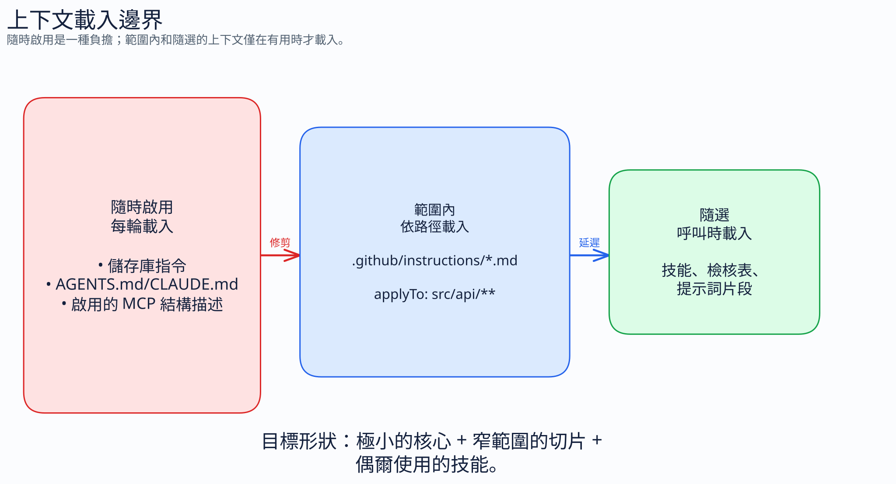
先將富文字檔案標準化
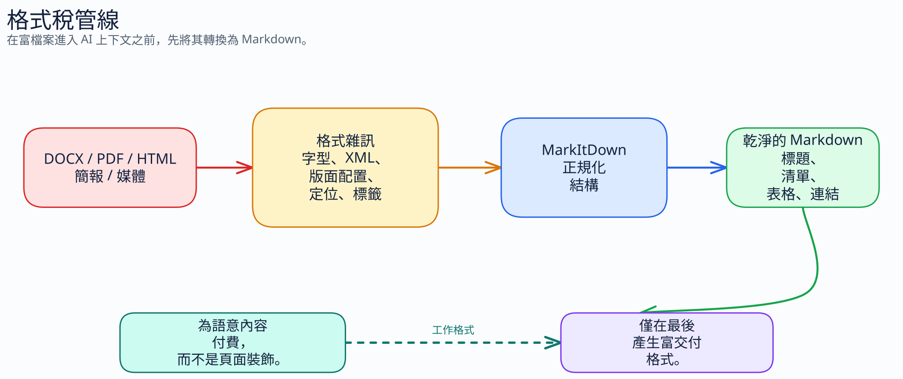
快取友善行為
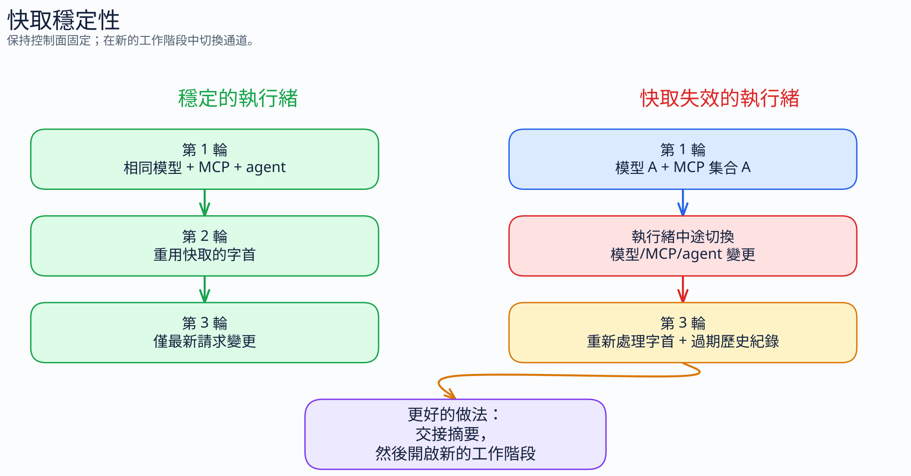
持續性的圖形導覽
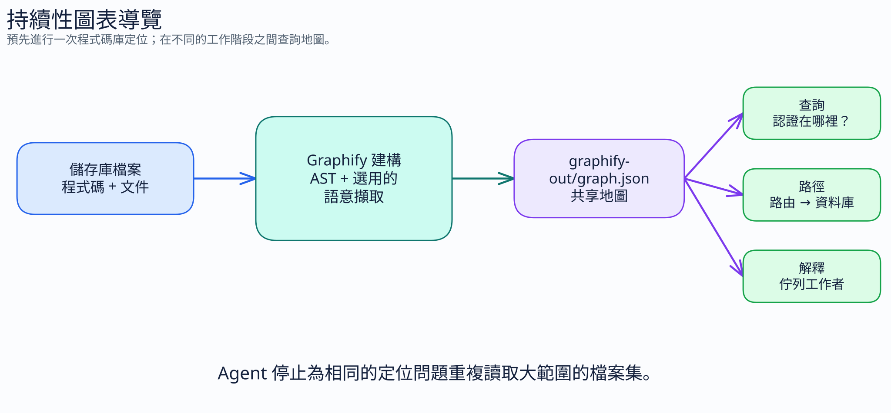
企業注意事項：內容排除
客戶端行動
為敏感檔案、產生的套件、大型資料檔案以及受監管的路徑設定內容排除。
重要：首先將此視為隱私/原則控制，其次才是節省 Token 的副作用。請查看官方文件中的目前支援範圍。
實作 5：上下文稽核
目標
尋找應改為限定範圍或隨選的常駐上下文。
步驟：檢查儲存庫指示、AGENTS/CLAUDE 檔案、開啟的標籤頁、產生的檔案、MCP 設定。
交付物：三欄式清單：保留常駐、移動至 applyTo、移至隨選/刪除。
時間：30 分鐘。
第 2.4 部分
輸出控制
告訴模型什麼不要說。最高的每 Token 投資報酬率。
預設指令
僅程式碼，無須解釋。最適合團隊已了解預期變更時的生成工作。
格式限制
| 指示 | 適用時機 |
|---|---|
| 以單一句子回答 | 快速決策或解釋 |
| 最多 3 個項目符號 | 易於瀏覽的摘要 |
| 以 JSON 回覆 | 機器可讀的擷取資訊 |
| 是/否，然後用一行說明原因 | 審查關卡 |
| 僅顯示差異 (Diff) | 修補程式 (Patch) 檢查 |
專案預設值
保持簡潔。除非要求，否則無須解釋。
生成工作僅輸出程式碼。
多用項目符號，少用段落。學習、偵錯或教學時覆寫此設定：明確要求解釋。
實作 6：輸出 A/B 測試
嘗試此方式 vs 彼方式
A: Add input validation to processOrder().
B: Add input validation to processOrder().
Code only. No explanation. Minimal diff.評估：回應長度、解釋所花 Token、差異 (diff) 的實用性。
時間：15 分鐘。
實作 7：強制格式
目標
練習要求有邊界限制的輸出。
提示詞：「最多 3 個項目符號」、「僅限表格」、「僅限 JSON」、「單一行結論 + 風險」。
交付物：團隊常用 Copilot 輸出的程式碼片段庫。
第 2.5 部分
工作流程最佳化
在最佳化字詞之前，先使用更便宜的互動形式。
認可 (Commit) 與 PR 文字至關重要
認可 (Commit)
feat: 新增透過設定頁面重設密碼功能
僅在「原因」不明顯時才寫正文。
審查
L42：錯誤：使用者可能為 null。在 .email 前加入保護。
單行、具體可行、有嚴重性代碼。
Ask vs Edit vs Agent
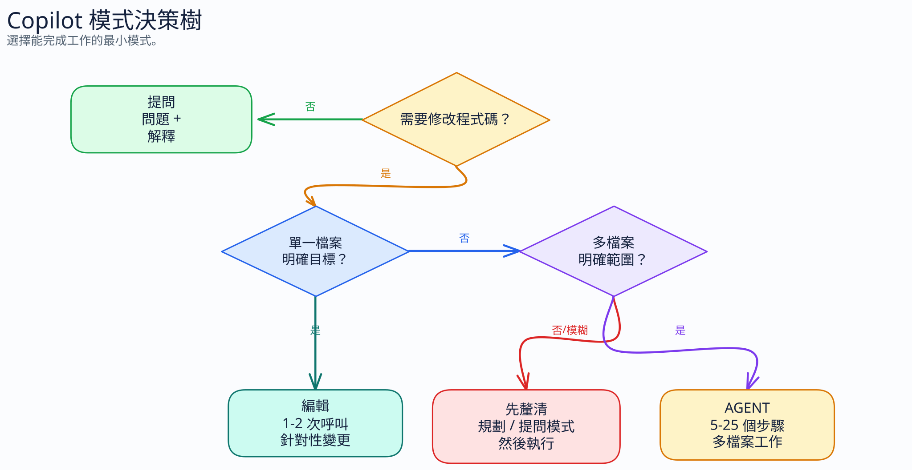
Auto模型預設
Auto 是一個很好的基準：支援的 Auto 池、具組織原則感知、根據文件對符合條件的付費方案 Chat 使用量提供折扣。
Auto 並不代表「提升至所有進階模型」。請刻意釘選進階模型。
當模型變更時重新調整提示詞
目標模型：GPT-5.5。
指引：<官方提示指引 URL>
檔案：.github/copilot-instructions.md、.github/instructions/*.md
使提示詞適應指引。保留行為。減少重工。
僅顯示差異 (diff)。何時不應壓縮
- 安全性警告。
- 不可逆的操作。
- 引導新手與教學。
- 合規性/法規語言。
- 使用片段會增加歧義的複雜指示。
透過使用教練建立閉環
/chronicle
Copilot CLI 工作階段歷史紀錄 (非 VS Code)。使用 /chronicle cost tips 查看 Token 花費，並使用 /chronicle improve 解決重複出現的困惑。
AI Engineering Coach
VS Code 本地延伸模組。尋找反模式、上下文健康狀況與技能機會。
計劃優先，廉價執行

實作 8：模式路由演練
目標
停止在一次性工作中使用 Agent 模式。
步驟：將 20 個工作範例分類為 Ask/Edit/Agent/Coding Agent。為您的選擇辯護。
交付物：團隊模式路由速查表。
時間：20 分鐘。
實作 9：模型路由演練
目標
預設防止釘選昂貴的模型。
步驟：將工作對應到 Auto、內建/較低成本、標準、進階模型。如果可行，包含推論難易度 (reasoning-effort) 選擇。
交付物：模型升級規則。
第 2.6 部分
常駐上下文問題
更多上下文可能會讓代理程式 (Agents) 表現更差且花費更多。
研究訊號
| 發現 | 觀察到的影響 |
|---|---|
| LLM 產生的上下文檔案 | 在 5/8 的設定中受損 |
| 平均正確率 | 下降約 2% |
| Token 成本 | 上升 20-23% |
| 推論額外開銷 | 在所引用的設定中上升約 22% |
為何上下文會造成損害
冗餘稅
重複代理程式可以自行發現的事實。
注意力稅
重要規則會在中間遺失。
錨定陷阱
過時的工具指引過度影響代理程式。
訊號/雜訊
常規事實會稀釋地雷。
僅保留地雷
| 保留 | 刪除 |
|---|---|
使用 uv 代替 pip | 這是一個 Python 專案 |
| 資料庫遷移必須按順序執行 | 我們使用 PostgreSQL |
| 不要重構 auth 模組；稽核暫緩中 | 我們使用 JWT 驗證 |
| 部署需要 VPN | 主分支 (Main branch) 受保護 |
錯誤追蹤器模型
開始時幾乎保持空白。
代理程式在某些地方犯錯 -> 新增一行。
根本原因修正後 -> 刪除該行。指示檔案應該增加與縮減，而不是像維基 (Wiki) 一樣累積。
實作 10：地雷修剪
目標
在不失去正確性的情況下削減上下文。
步驟：將每個指示標記為可發現的、風格、地雷、過時的、重複的。刪除或限制除真正的常駐地雷外的一切範圍。
交付物：最多 10 行的指示檔案草稿。
時間：35 分鐘。
第 2.7 部分
MCP 與工具成本
工具結構描述是隱藏的 Token 稅。
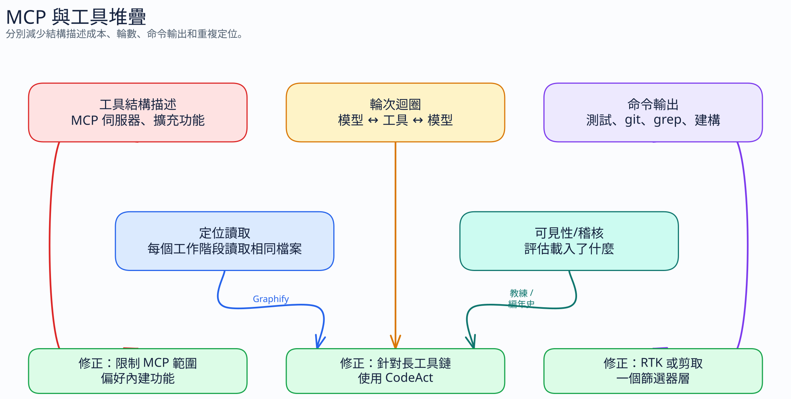
先進行評估
/context
系統/工具：MCP + 指示 + 系統提示詞
訊息：交談歷史紀錄
可用空間：剩餘的上下文在 VS Code 中，估計作用中的 MCP 伺服器數量 x 工具數量 x 約 200 Token/工具。
每個工具都會消耗 Token
| 元件 | 大約成本 |
|---|---|
| 名稱 + 說明 | 20-50 個 Token |
| 簡單參數結構描述 | 30-80 個 Token |
| 複雜參數結構描述 | 100-300 個 Token |
| 每個工具總計 | 100-500 個 Token |
相乘問題
10 個 MCP 伺服器
x 每個伺服器 5 個工具
x 200 Token/工具
= 每步 10,000 個 Token
15 個代理程式步驟 = 150,000 個結構描述 Token稽核規則
- 停用目前不需要的伺服器。
- 使用每個工作區專屬的設定，而不是全域啟用所有內容。
- 優先使用內建工具，而不是重複的檔案系統 MCP。
- 針對偶爾需要的功能使用技能。
- 在支援的情況下，透過命名空間/模式限制大型外掛程式 (Plugins) 的範圍。
工具輸出壓縮
RTK
Rust CLI 代理過濾嘈雜的 Shell 輸出：測試、git diff、grep、記錄 (logs)、檔案清單。
rtk init --copilotsnip
YAML 可延伸的命令過濾器，具有本地節省統計資料與團隊維護的規則。
snip init --agent copilot每個命令路徑選擇一個輸出過濾器層。預設情況下，請勿同時堆疊 RTK 和 snip。
每層一個工具
| 圖層 | 工具 | 減少項目 |
|---|---|---|
| 工作流程呼叫 | CodeAct | 重複的模型與工具迴圈 |
| 命令輸出 | RTK 或 snip | 冗長的 Shell 結果 |
| 命令選擇 | minimal-context-tools | 寬泛的搜尋/讀取行為 |
| 程式碼庫方向定位 | Graphify | 重複的檔案讀取 |
| 可見性 | Chronicle / Coach | 您可能會遺漏的浪費 |
Azure MCP 案例模式
一個大型外掛程式可能會主導系統/工具預算。
--namespace appservice --namespace cosmos --namespace keyvault --namespace storage按服務/角色限制範圍。除非確實需要，否則請避免「所有工具」模式。
實作 11：MCP 稽核
目標
移除隱藏的結構描述額外開銷。
步驟：盤點啟用的 MCP 伺服器、工具數量、全域 vs 工作區範圍、擁有者、使用頻率。
交付物：保留/停用/限定範圍的表格 + 重啟計劃。
時間：30 分鐘。
企業實作：工具原則
客戶端行動
依角色定義核准的 MCP 伺服器：開發人員、資料、平台、安全性、支援。
交付物：每個團隊的預設 MCP 設定檔 + 大型外掛程式的例外流程。
第三部分
比較與資料
使用證據來選擇具有最佳影響力對付出努力比例的習慣。
相同工作，不同成本
| 技巧 | 提示詞 | Token 數 |
|---|---|---|
| 冗長 | 請加入完整的錯誤處理... | ~40 |
| 精簡原始人 | 加入錯誤處理。涵蓋 null、型別、網路。 | ~16 |
| 完整原始人 | 錯誤處理。涵蓋：null、錯誤型別、網路錯誤。 | ~12 |
| 極簡 | 錯誤處理：null/錯誤型別/網路錯誤。 | ~7 |
最大贏家
- 原始人說話方式 + 精確的提示詞。
- 僅程式碼 / 受限的輸出。
- 縮減常駐上下文。
- 處理簡單問題時使用 Ask 模式。
- 稽核 MCP 伺服器。
- 模型變更後重新調整提示詞。
品質曲線
節省量： 精簡 ---- 完整 ---- 極簡 ---- 極端
風險： 低 ---- 低 ---- 中 ---- 高最佳點：完整原始人。對技術使用者而言有最大回報，且風險可以忽略。
實作 12：安排技巧優先順序
目標
依影響力、努力、風險來選擇變更。
步驟：就影響力、努力、採用摩擦力、治理需求，為每項技巧評分 1-5 分。
交付物：團隊前 5 名與「不採用」清單。
時間：25 分鐘。
第四部分
實用設定
將技巧轉化為儲存庫與團隊的預設值。
儲存庫設定步驟
- 建立壓縮的
.github/copilot-instructions.md。 - 加入壓縮的專案專屬規則。
- 使用
applyTo拆分特定路徑的指引。 - 預設使用 Auto；僅在有原因時釘選。
- 為 Coding Agent 新增
copilot-setup-steps.yml。
入門指示範本
像原始人一樣簡短。技術實質內容精確。只丟棄廢話。
丟棄：冠詞、填充字、客套話、迴避字句。
可使用片段。簡短的同義詞。程式碼保持不變。
生成工作僅輸出程式碼。除非要求，否則無須解釋。
最少化工具呼叫。批次處理相關的讀取/編輯。Coding Agent 設定
# .github/copilot-setup-steps.yml
steps:
- name: 安裝相依套件
run: npm ci
- name: 建構
run: npm run build防止透過嘗試錯誤來探索。節省代理程式 (Agent) 步驟。
精確的 Issue 範本
錯誤：當 email 包含「+」時登入失敗。
檔案：src/auth/login.ts，validateEmail() L42。
修正：在呼叫 OAuth 供應商前對 email 進行 URL 編碼。
測試：新增 user+tag@example.com 案例。
完成：針對性測試通過。在 4 週內建立習慣
| 週次 | 習慣 |
|---|---|
| 1 | 壓縮指示 + 提問時使用 Ask 模式 |
| 2 | 精簡原始人提示詞 |
| 3 | 完整原始人 + 結構化格式 |
| 4 | 僅限程式碼預設值 + 常駐上下文之外的可重複使用片段 |
Agent 模式控制項
{
"chat.agent.maxRequests": 10,
"github.copilot.chat.agent.model": "auto"
}小心限制失控的工作階段。僅在工作需要時增加。
Agent 模式成本迴圈
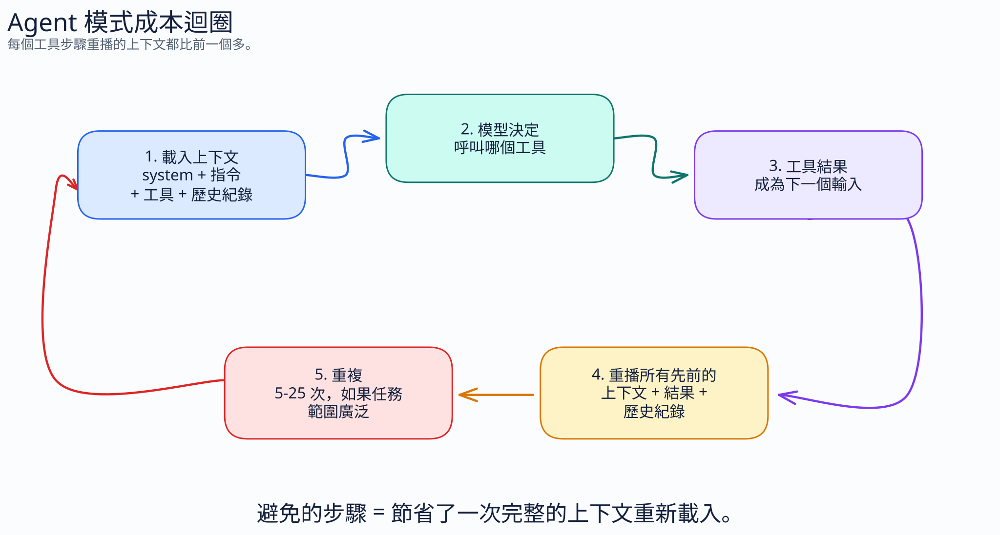
工作階段組態檢查清單
模型
模式
代理程式/設定檔 (agent/profile)
作用中的 MCP/工具
輸出過濾器
儲存庫指示在工作階段開始前選擇。穩定的組態 = 可預測的成本與快取行為。
實作 13：儲存庫實作
目標
建立一個已就緒的儲存庫 Token 最佳化 PR 草稿。
步驟：草擬 copilot-instructions.md、一個具範圍限制的指示檔案、一個 Coding Agent 設定步驟、一個 Issue 範本片段。
交付物：分支或修補程式提案。
時間：45 分鐘。
第 4.2 部分
模型選擇與定價
區分 Copilot 文件、UBB 框架以及供應商 Token 定價。
三種定價視角
| 視角 | 解答內容 |
|---|---|
| GitHub Copilot 文件 | 方案可用性、模型存取、Auto 行為、發布的訊號 |
| UBB 框架 | 轉換後的 AI 額度預算與治理 |
| 供應商 API 定價 | 輸入 vs 輸出的直覺，而非 Copilot 計費表 |
Auto：實際意義
- 從支援的 Auto 池中選擇。
- 受方案與組織原則約束。
- 基於健全狀況與效能。
- 對符合條件的付費方案 Chat 使用量提供折扣。
- 不會自動提升到所有進階模型。
推論難易度 (Reasoning effort)
| 難易度 | 適用於 |
|---|---|
| 低 | 高容量的簡單交談/分類 |
| 中 | 在支援的情況下，典型編碼與大量使用工具的工作 |
| 高/最大 | 架構、安全性、新型分解 |
僅在提供此控制項的模型上使用。
反模式
- 整天釘選進階模型。
- 假設當工作變難時 Auto 會自動跳轉到進階模型。
- 將供應商 API 定價等同於 Copilot 計費。
- 首先為整個組織啟用所有進階模型。
- 忽略方案/模型的可用性。
實作 14：模型升級原則
客戶端行動
定義使用者何時可以釘選進階模型，以及何時需要使用 Auto。
步驟：將工作流程對應到預設模型通道、升級觸發條件、預期價值、回復訊號。
交付物：一頁的模型原則草稿。
時間：30 分鐘。
第 4.3 部分
企業治理
管理員控制項限制花費。提示詞習慣提高效率。
花費槓桿
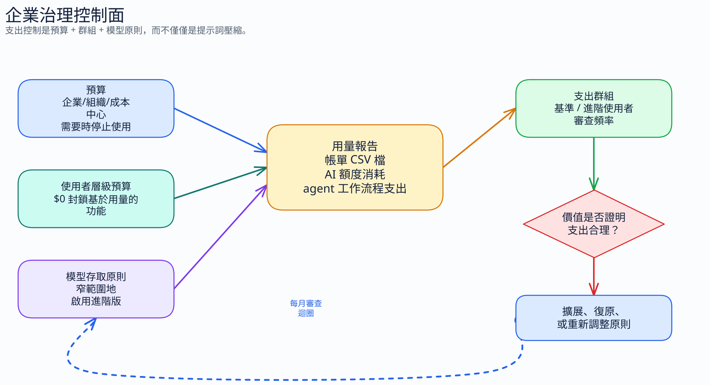
提示詞壓縮不會限制花費。它會減少允許使用量內的浪費。
優先設定預算
客戶端行動
設定企業/組織/成本中心預算。儘早啟用警示。在報告取得信任後啟用停止使用功能。每月進行審查。
使用者級別緊縮
- 基準使用者：低 AI 額度預算。
- 權力使用者 (Power users)：配合工作需要給予較高預算。
$0預算：沒有基於使用量的功能。- 每月審查並調降未使用的分配額度。
在啟用前審查模型
| 問題 | 決策 |
|---|---|
| 哪些工作流程需要進階模型？ | 窄範圍啟用 |
| 哪些團隊能創造可衡量的價值？ | 分配較高預算 |
| 哪些使用者可以留在 Auto？ | 保持預設路徑廉價 |
| 回復訊號是什麼？ | 使用量上升，價值持平 |
指示範圍治理
- 組織指示：寬泛的 GitHub.com 原則與審查提醒。
- 儲存庫指示：IDE 工作流程預設值與編碼規則。
- 路徑專屬指示：在上下文付費的本地規則。
- 不要假設組織指示適用於所有地方；請查看文件。
獨立組織：僅作為備用方案
當組織結構已與群組匹配時，對不同的模型原則或計費界限非常有用。
成本：管理額外開銷、授權複雜性、使用者擴張、SCIM/成本中心限制。
衡量正確的事情
- 哪些團隊超出基準？
- 哪些使用者推升了 AI 額度使用量？
- 哪些模型改善了成果？
- 哪些代理程式工作流程在沒有交付價值的情況下花費？
6 月 1 日轉換檢查清單
- 從請求計數器轉移到 AI 額度預算。
- 決定共用預算 vs 使用者級別預算。
- 在進階模型變成直接支出前，審查模型的可用性。
- 提醒團隊，自動完成與下一次編輯不包含在 AI 額度計費中。
- 首先關注長交談與代理程式工作流程。
實作 15：預算導入
客戶端行動
為一個企業帳戶設計預算導入。
步驟：選擇試行組織、成本中心、基準預算、警示臨界值、停止使用規則、使用者例外。
交付物：預算營運模型。
時間：35 分鐘。
實作 16：治理桌面演練
情境
代理程式工作階段使一個團隊的 AI 額度使用量飆升 4 倍。交付產出保持不變。
步驟：決定預算行動、模型原則行動、指示/上下文行動、MCP 稽核行動、溝通計劃。
時間：25 分鐘。
第 4.4 部分
每個 Token 成果
針對被接受的工作進行最佳化，而非最短的提示詞。
指標
一個導致錯誤方向工作的簡短提示詞，比一個能正確達成的較長計劃更昂貴。
代理程式成本研究訊號
| 發現 | 隱含意義 |
|---|---|
| 代理程式編碼的消耗可能遠高於交談 | 請勿推斷簡單交談的成本 |
| 相同工作在不同執行次數間可能會有很大差異 | 使用預算與停止規則 |
| 更多 Token 並不保證準確性 | 最佳化迴圈品質 |
| 輸入主導了代理程式成本 | 上下文衛生至關重要 |
成果迴圈
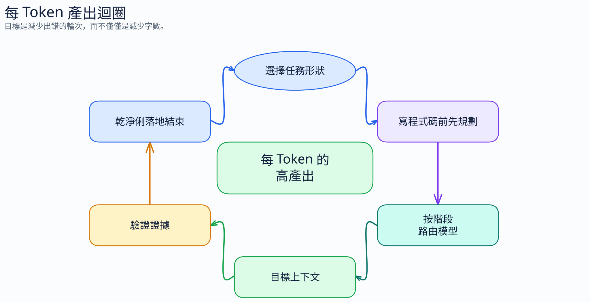
技能作為實踐
| 技能 | Token 影響 |
|---|---|
| 腦力激盪 | 防止過早鎖定 |
| 規劃 | 減少執行過程中的猜測 |
| 綠色狀態 (建構無誤) | 避免對未知的基準失敗進行偵錯 |
| 驗證 | 防止虛假完成 |
| 完美關閉 | 防止審查流失 |
| 分支關閉紀律 | 停止過時的上下文結轉 |
技能庫：借鏡模式
SDLC
Superpowers、規劃、TDD、分支完成。
交接
用於需求、計劃、熵控制的 agent-toolkit 模式。
防護欄
金鑰、雲端、資料庫、Docker、相依性以及重試停止注意事項。
QA / 寫作
瀏覽器證據、寫作審查、隨選 QA 深度。
不要安裝所有技能。僅載入改變下一步行動的技能。
技能庫採用訊號
Star 數顯示受關注度，而非品質。請根據技能是否改變下一個代理程式行動來判斷。
計劃優先，廉價執行
日常模型指南
- 未知日常工作優先使用 Auto。
- 微小有界限的工作使用輕量級模型。
- 明確計劃後的正常實作使用中階模型。
- 規劃、架構、困難偵錯使用強大模型。
- 切換模型/工具/代理程式通道時使用全新工作階段。
基準測試注意事項
- 基準測試用來選擇候選方案；儲存庫工作用來選擇預設值。
- 測試架構、工具、檢索以及推論難易度會影響評分。
- 將成果與成本一起比較，而非單看評分。
- 標記來源：已驗證、方向性、軼事趣聞。
專題實作
30 天 Token 最佳化計劃
將工作坊轉化為客戶導入方案。
逐週導入
| 週次 | 團隊行動 | 管理員行動 |
|---|---|---|
| 1 | 輸出預設值 + Ask 模式 | 使用量基準 |
| 2 | 指示剪裁 + 範圍限制規則 + Markdown 轉換 | 預算試行 |
| 3 | MCP 稽核 + 輸出過濾器 + Graphify 試行 | 模型存取審查 |
| 4 | 計劃優先執行 + 驗證/關閉紀律 | 每月每個 Token 成果審查 |
專題實作
目標
建立客戶專屬的行動計劃。
單元：儲存庫變更、使用者習慣、MCP/工具原則、模型原則、預算、報告、擁有者、截止日期。
交付物：準備給客戶贊助商的 30 天計劃。
時間：30 分鐘。
最終檢查清單
開發人員
- 僅限程式碼預設值
- Ask/Edit/Agent 路由
- 簡潔的提示詞
- 計劃優先，全新工作階段
儲存庫
- 微小常駐指示
- 範圍限制的
applyTo檔案 - Coding Agent 設定步驟
- 精確的 Issue 範本
- 實用時使用 Graphify 地圖
平台
- MCP 設定檔
- 內容排除
- 模型存取原則
- RTK 或 snip 輸出策略
- 每層一個工具
企業
- 預算
- 使用者級別限制
- 使用量報告
- 每月成果審查